大蔵運動公園
| 日付 | 2015年4月12日（日） |
|---|---|
| メンバー | 家族（妻、長女・4歳、長男・1歳） |
| アクセス | 車 |
大蔵運動公園は東京都世田谷区にある公園だ。
体育館、プール、テニスコートなどの運動施設がそろっている公園だが、
アスレチックや遊具など、子供向けのものもいくらかある。
8:30に駐車場に到着。120台収容の駐車場で、半分くらい埋まっている。
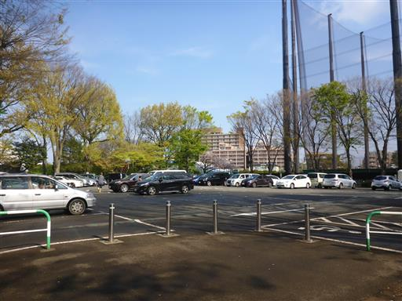
アスレチックは駐車場から遠く離れた位置にあるため、ゆっくり歩いて向かう。
道路脇にはなぜか真っ赤に紅葉している木が立っている。

小さなアスレチック場に到着。まだ朝早いためか、人影は少ない。
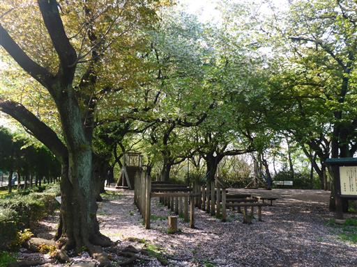
ネットを登る。アスレチックの数は全部で12個。
どれも割と簡単で、すぐに終わってしまう。
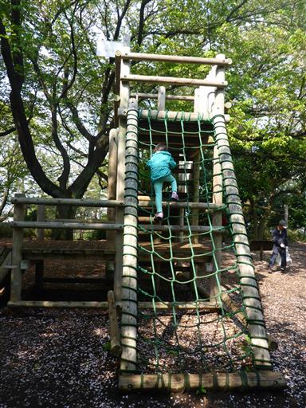
ロープウェイ。息子を抱えながらやるのは結構難しい。
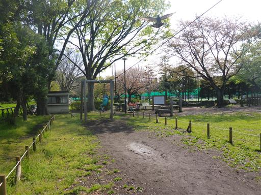
側の広場にはブランコや砂場などがある。回転する遊具など、珍しい遊具も多い。
すぐ裏は30号棟まである巨大な大蔵住宅だ。
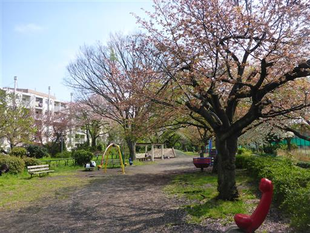
おやつを食べていると、餌をもらい慣れた鳩が群がってくる。
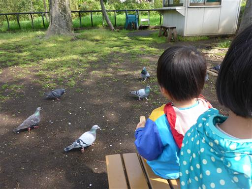
一通り遊んだら、駐車場近くの広場に移動する。
テニスコートでは息子が足を止めて熱心に眺めている。
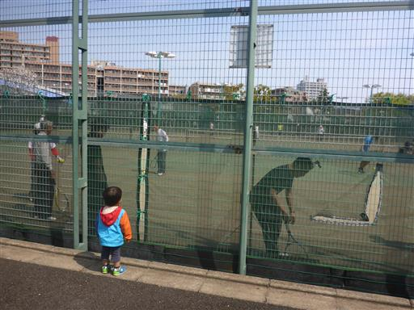
巨大迷路で遊ぶ。
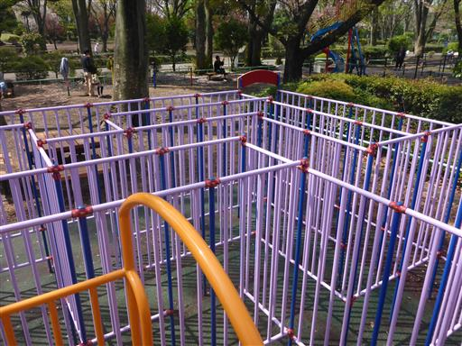
迷路と言えるほど複雑な造りではないが、
子供たちにとっては楽しいようで、中を走り回っている。
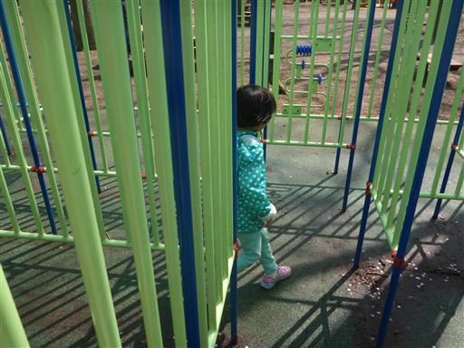
機関車が展示されている。
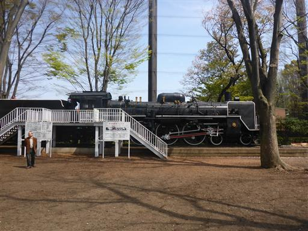
近くから見ると、その大きさに圧倒される。
特に車輪の大きさは今の電車と全く違う。
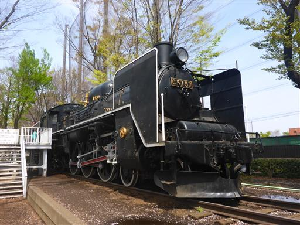
鉄でできた重そうな車体だ。
少しだけ中に入れる場所があるが、それ以外は立入が禁止されている。
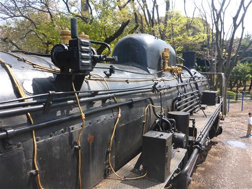
側の広場の芝生で昼食をとる。
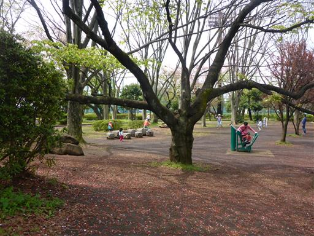
昼を過ぎると人が多くなってきて、立入禁止のはずの機関車にも人が群がっている。
たくさんの遊具で遊べて、娘は満足したようだった。
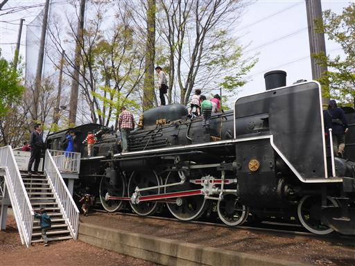
他の記録